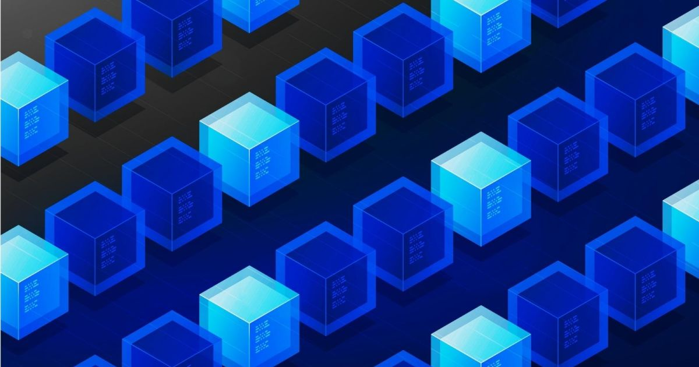

La tecnología Blockchain es una tecnología que puede ser difícil y
densa de explicar, porque engloba muchos conceptos de otras
tecnologías y si no los manejas bien, puedes perderte en un mar muy
extenso.
Si a ti te gusta enterarte de las cosas ‘rápido’ y estabas buscando
un sitio en el que enterarte de en qué consiste esta tecnología en 5
minutos, simplemente para que cuando alguien hable de ella no te
pierdas, quédate. Estás en el sitio correcto.
La Blockchain, ¿qué es?
La blockchain es una base de datos que además funciona como una red
que permite a los usuarios que participan en ella intercambiar valor
entre sí, de forma inmediata, en tiempo real. Se dice que es una
base de datos porque todos estos intercambios, o mejor dicho,
transacciones, quedan registrados automáticamente (sin la
intervención humana) de forma inmutable (que no se puede modificar
ni borrar) y cronológicamente ordenados.

Hasta aquí parece sencillo, y conceptualmente, lo es. Pero la cadena
de bloques le ha dado una vuelta de tuerca más porque consigue hacer
todo lo que os acabo de comentar (que aunque lo hayamos explicado en
un párrafo, es mucho), pero añadiendo al proceso muchas
características muy importantes y beneficiosas.
Características de la blockchain
La cadena de bloques es completamente pública. Esto quiere decir
que todo el que desee hacerlo, libremente puede empezar a
utilizarla, no es necesario tener ningún tipo de permiso ni de
validación.
También es transparente, lo cual quiere decir que todos y cada uno
de los registros de transacciones que tienen lugar dentro de la
red, son públicos también. Cualquiera, sea participante de la red
o no, puede leer el registro de transacciones. Puede parecer a
primera vista, que esto viola todas las cláusulas de la Ley de
Protección de Datos, y que va directamente contra la privacidad de
cada usuario, pero esto no es así, porque la información está
encriptada. Puedes ver toda la información asociada a la
transacción, pero jamás verás nombres, apellidos, ni información
sensible.
La información es inmutable una vez pasa a formar parte de la
cadena de bloques. Esto implica que no se puede borrar ni
modificar, lo cual es genial porque protege a la red de posibles
manipulaciones y fraude, así que es una red bastante segura en
cuanto a hackeos y agentes maliciosos, y esto es algo que hoy en
día es difícil de encontrar.
La filosofía de la blockchain es la eliminación de intermediarios
(entre otras cosas). Así que aquí, para intercambiar el valor
entre unos usuarios y otros, lo único necesario va a ser la cadena
de bloques. No existen entidades centrales ni empresas que
gestionen y posean toda la información, sino que son los nodos o
participantes de la red quienes poseen esta información, y se
encargan de hacer que la red funcione.
Éste, a grandes rasgos, es el funcionamiento global de la tecnología
blockchain y sus características más importantes. Obviamente, si
profundizásemos en cada detalle saldrían un montón de conceptos y de
tecnologías que juegan un papel fundamental en esta tecnología. Si
te ha picado el gusanillo después de leer este artículo y quieres
saber más, te sugiero que vayas a leer otros artículos de este mismo
blog o que vayas a nuestro canal de Youtube, donde compartimos
también muchísima información de valor.
Una información extra que también deberías saber, es que las redes
blockchain, además de permitir todo lo que te acabo de contar,
también permiten desarrollar software complejo sobre ellas.
Esto básicamente, quiere decir que se pueden desarrollar
aplicaciones y webs que se benefician de todas estas características
que os acabo de comentar: descentralización, transparencia,
seguridad, etc.
Si te interesa el mundo del desarrollo de software y también la
tecnología blockchain, definitivamente: te interesa el desarrollo
blockchain.
Ésta además, es una de las profesiones del futuro, porque la demanda
de desarrolladores blockchain está creciendo cada vez más de manera
exponencial. Por eso en Conquer Blocks hemos creado un Máster de
Desarrollo Blockchain con el que estamos formando a los nuevos
desarrolladores que van a empezar a formar parte de este sector del
mercado del desarrollo de software.
Si quieres saber todo lo que impartimos en nuestra formación puedes
acceder al siguiente link y consultar todo lo que necesites saber.